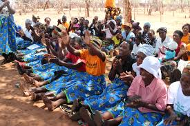

Miles ahead is an organisation that came together after seeing how much women and young girls suffer in rural areas and informal settlements to an extent they cannot afford essential things like innerwears,pads, and sanitary wears. On numerous research, we found that even in rural areas and informal settlements, most of the jobs are male-dominated and very fewwomen venture into bead-work as a passtime rather than as an income generating activity. At Miles-Ahead, we strive to bring down those barriers and pave way for these women and young girls to be able to become self-reliant, in that, they are able to generate their own income with zero to minimal capital as all materials are recycled, thus creating jobs and conserving the environment at the same time.Mental health of these women and children is also a priority.Most people assume that teenagers go through puberty and thus they act up.We realise that women and young girls go through mental health issues and so we try as much as we can to get involved in their mental well being.
Miles ahead has people who are experience in community based workshops and can relate very well with the issues faced in rural ans informal settlements.Through our contacts on the ground and online,we do research to find out where these valnerable and people are, we then go and talk to them about what we do and find out if they are interested. Once we come to an agreement,we then set a date to go and do material gathering mostly born and horns.
We aim to empower.By empowering the women and girls,we reduce the rate of;
Miles Ahead strives to conserve environment while creating job opportunities for women and young girls all over east Africa.In future,we plan to apply for funds enough to allow us venture as far as Uganda,Tanzania,Rwanda and Burundi. We will lias with tourist companies to help us in finding market for these products and also talk to people in the diaspora to buy and promote us.This will help improve on the market and so bring in more money for the women.Exposure too is very important.
Social media has helped so much in bringing people together and getting information out there.Miles Ahead is looking to come up with ways of which the the women in rural areas can upload and post their product with ease to help them creat markrt for themselves. We will also have an online platform where people can express theirselves artistically for free.